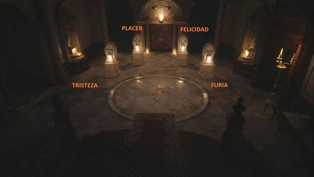
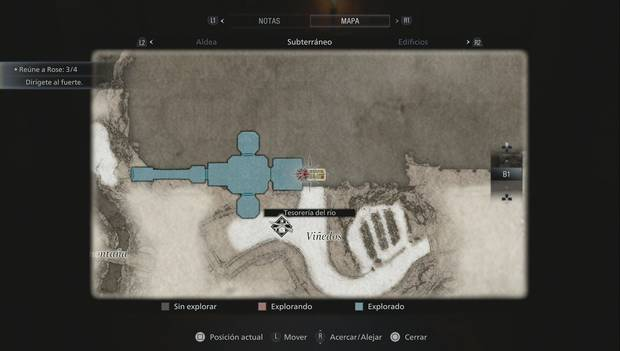

Resident Evil 8: TODOS los puzzles, ubicación y soluciones.
Puzzle de la Sala de guerra del Castillo Dimitrescu
Este puzzle está en las mazmorras del Castillo Dimitrescu. Simplemente tendrás que disparar a la lámpara colgante para que encienda las antorchas de los lados al balancearse.
Puzzle de las estatuas del Castillo Dimitrescu.
Este puzzle tendrá lugar en la Sala de abluciones del Castillo Dimitrescu. Si lo quieres resolver por tu cuenta, la solución está en un documento del fondo de la sala. Si no quieres complicarte, la solución es que los aldeanos deben mirar al hombre a caballo, el hombre a caballo a la mujer con la botella, la mujer de la botella a Lady Dimitrescu y Lady Dimitrescu debe mirar a la mujer. Al hacerlo, se abrirá el camino para avanzar.
Puzzle de las campanas del Castillo Dimitrescu.
Este puzzle tendrá lugar en el Atelier del Castillo Dimitrescu. Para completarlo tienes que disparar a 5 campanas escondidas en la sala. Puedes disparar a tres desde lo alto de las escaleras de la pared opuesta al cuadro:
- Tras la ventana del fondo, en un campanario.
- Sobre la lámpara que cuelga del techo.
- Encima de la vitrina de una de las paredes.
- Gira a la izquierda desde lo alto de las escaleras para ver otra campana oscilando entre los engranajes.
- Tienes la última campana abajo, junto a los bustos.
Al haber disparado a las cinco campanas, el cuadro de Lady Dimitrescu se moverá, permitiéndote pasar por el túnel.
Puzzle de las máscaras del Castillo Dimitrescu.
Este puzzle tendrá lugar en el Salón de los ángeles del Castillo Dimitrescu, justo al final, antes del combate con el jefe. Tendrás que colocar las máscaras, de izquierda a derecha, en este órden:
- Tristeza.
- Placer.
- Felicidad.
- Furia.
Candado con combinación del Taller de la aldea.
Al ir al Taller durante Retorno a la aldea, te encontrarás un mueble cerrado con una combinación de seis dígitos. Puedes ver la solución si miras por la ventana a la derecha, hay tres parejas de números.
La solución es 070408. Dentro del armario encontrarás la manivela de gato y la M1911, o lei si ya has conseguido el arma.
Candado con combinación del taller de la Casa de Beneviento.
Cuando entres al taller de muñecas del sótano de la Casa de Beneviento, tendrás que introducir una combinación de 6 dígitos en un candado. Para dar con la solución, tienes que recoger el anillo de la mano izquierda de la muñeca, abrir la puerta de la oficina con la llave del hombro derecho, lavar el anillo y examinarlo.

La solución, como puedes ver, es 052911.
Puzzle de la caja de música de la Casa de Beneviento.
Este puzzle estará en el almacén del sótano de la Casa de Beneviento. Lo primero que debes hacer es recoger la Palometa de la pierna derecha de la muñeca del taller. Con ella, podrás interactuar con la caja de música del taller. Tendrás que mover las ruedas hasta que tengan este aspecto:
Al resolverlo, conseguirás las Pinzas, necesarias para el siguiente puzzle.
Puzzle de la película de la Casa de Beneviento.
Otro de los puzzles del sótano de la Casa de Beneviento. Con las Pinzas del puzzle de la caja de música podrás coger la película de la boca de la muñeca del taller. Con ella en tu poder, al ir al Estudio, junto al ascensor, y usarla en el proyector. Tienes la solución en la nota junto al aparato, pero por si acaso, el orden correcto es el siguiente:
- Muñeco.
- Libro.
- Bebé.
- Caja de música.
- Anillo de bodas.
Al colocarlo en orden correcto, pulsa el botón de Reproducir para abrir un camino oculto donde darás con las Tijeras, necesarias para el siguiente puzzle.
Puzzle de la puerta de los símbolos de la Casa de Beneviento.
Este puzzle se encuentra en el sótano de la Casa de Beneviento, como los anteriores. Tendrás que coger las tijeras del final del puzzle de la película y recoger el medallón del pecho de la muñeca. Después, ve al pasillo oeste del taller. Usa el medallón y coloca los siguientes símbolos en la puerta (las soluciones están en el ojo de la muñeca y su brazo izquierdo):
- Cuervo mirando a la derecha.
- Tres ojos cerrados.
Abrirla te permitirá llegar a la llave de la caja de fusibles, necesaria para abandonar el sótano.
Armario con combinación de la casa del lutier en la aldea.
Este puzzle se consigue durante Casa de Beneviento, después de derrotar al jefe y al volver a la aldea. Consigue la llave de la casa del lutier y ve a ella:
Al entrar, a la izquierda tienes un dibujo de feliz cumpleaños con la fecha 27-09-17. Se trata de la combinación del armario, donde darás con el Tesoro de la aldea Hraesvelgr de acero y el cargador de gran capacidad del Rifle F2, o bien lei si ya has conseguido las piezas.
Puzzle de la sala de control de la presa.
Este puzzle se resuelve durante la Presa de Moreau. Cuando hayas conseguido la manivela, tendrás que mover los molinos y marcar una secuencia de colores. La tienes en el papel de al lado: la solución se saca al colocar la "antena" del papel en la esquina superior derecha.
- Azul - Blanco - Naranja.
- Blanco - Naranja - Negro.
- Naranja - Azul - Azul.
Puzzle de la tesorería del Castillo.
Para completar este puzzle, espera a llegar al final de Presa de Moreau, cuando tengas la manivela. Ve al oeste del altar, baja el puente, recoge la barca y ve al norte, hasta el embarcadero. Desembarca y entra por la puerta del castillo.
Una vez abajo, verás un puzzle de antorchas. Puedes encender las dos primeras disparando a la lámpara colgante. Para encender la tercera, haz que un monstruo toque la lámpara colgante y luego atráela al pedestal del fondo, para así poder llegar a la Estatua de la dama dorada.